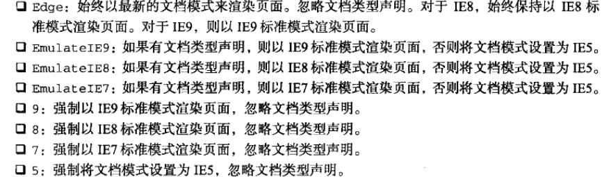

DOM模型
DOM(文档对象模型)是针对HTML和XML的一个API，DOM描绘了一个层次化的节点树，允许开发人员添加、移除和修改页面某一部分。
IE中的所有DOM对象都是以COM对象(Component Object Model,组件对象模型)的形式实现的。因此,IE中的DOM对象与原生JavaScript对象的行为或活动特点并不一致。
Node
DOM1级规定了Node接口，12种节点类型都继承自该接口。但是在IE中无法访问到Node类型。
Node常见的属性：
- nodeType:1代表元素节点,2属性节点,3文本节点(保证兼容性,使用数值进行比较。)
- nodeName:元素节点为标签名,
- nodeValue:元素节点值为null
- childNodes:保存着NodeList对象
- parentNode:父节点
- previousSibling和nextSibling:前一个和后一个兄弟节点
- firstChild和lastChild:指向第一和最后一个孩子节点
- ownerDocument:指向表示整个文档的文档节点
Node常见的方法：
- hasChildNodes():查询是否存在子节点
- appendChild():如果传入的节点在文档流中存在,则从一个位置移向另一个位置。返回移动的节点
- insertBefore():第一个参数为要插入的节点,第二个参数为参照的节点。如果参照节点为空,则执行效果与appendChild()相同
- replaceChild():第一个参数为替换的节点,第二个参数为被替换节点。
- removeChild():移除的节点任然在文档流中,但没有位置。
- cloneNode():用于创建调用这个方法的节点的一个完全相同的副本。若参数为true,则复制该节点的整个节点树。不会复制事件处理程序,IE下会复制事件处理程序。
- normalize():去掉空的文本节点，合并非空的文本节点为一个文本节点。
注意NodeList对象可以通过下标访问,也具有length属性,但并非Array的实例。DOM结构的变化能自动反映在NodeList对象中。
1 | //将NodeList转换为数组 |
Document
document对象是HTMLDocument继承自Document类型)的一个实例,表示整个HTML页面,是window对象的一个属性
document常见属性：
- documentElement:指向
<html>元素 - body:指向
<body>元素 - doctype:访问
<!DOCTYPE>信息,支持情况不一 - title:设置文档标题。设置它不会修改
<title>标签 - URL:获得url,不可设置
- domain:获取域名,只可设置为URL包含的域
- referrer:取得来源页面的url,不可设置
特殊集合，这些集合都是HTMLCollection对象
- forms 文档中所有的form元素
- images 文档中所有的img元素
- links 所有带href的a元素
HTMLCollection具有namedItem方法，可以根据name属性获得值1
2
3
4var imgs = document.getElementsByTagName("img");
imgs.namedItem("firstImg");
//获得name属性值为firstImg的元素(只返回一个),等价于
imgs["firstImg"];
document常见方法：
- getElementById()取得元素通过ID
- getElementsByTagName():取得元素通过标签名
- getElementsByName():返回所有name属性为参数的HTMLCollection集合。
- implementation.hasFeature(‘HTML’,’1.0’) 检测浏览器是否支持,DOM的功能和版本
- createElement()创建Element
- createAttribute()创建属性节点
- createTextNode()创建文本节点
- createDocumentFragement() 创建文档片段
- write/writeln():输出内容到html文档中，页面加载期间不会重写内容,页面加载后会重写内容
将domain设置为相同,内外两个页面就可以相互操作。设置domain只能设置为更简短，不能设置为更长。例如：将www.xwork.com和p2p.xwork.com 都设置为 xwork.com 两个页面就能互相操作。
Element类型
Element类型用于表现XML或HTML元素，提供了对元素标签名、子节点及特性的访问。所有HTML元素都由HTMLElement类型表示,不是直接通过这个类型,也是通过它的子类型来表示。
每个HTML元素都存在的标准特性
- id,元素在文档中的唯一标识符
- title,有关元素的附加说明信息
- className,与元素class对应
- clientWidth/clientHeight 内部宽高
- clientLeft/clientTop 距离左边/上边的长度
- innerHTML 这个元素内容的文本
- attributes属性包含一系列节点，每个节点的nodeName是特性的名称，而节点的nodeValue是特性的值。
- getNamedItem(name) 返回nodeName属性等于name的节点
- removeNamedItem(name) 移除nodeName属性等于name的节点
- setNamedItem(node) 向列表中添加节点(参数需要是Attr类型)，节点的nodeName属性为索引
- item(pos) 返回数字pos位置处的节点
- specified 每个属性节点具有该属性用于判断元素是否设置了该属性
常见方法:
- addEventListener()/removeEventListener() 添加/移除事件处理函数
- getAttribute()/hasAttribute()/setAttribute() 获取/含有/设置属性
- getElementsByTagName() 通过标签获取元素
- setAttributeNode()/getAttributeNode() 设置/获取属性节点
- querySelector()/querySelectorAll() 根据条件查询一个/全部节点
- 元素遍历API
- childElementCount 子元素个数
- firstElementChild 第一个子元素
- lastElementChild 最后一个子元素
- previousElementSibling 前一个同辈元素
- nextElementSibling 后一个同辈元素
Text
文本节点由Text类型标识，包含的是可以照字面解释的纯文本内容。文本节点中保存的字符会经过编码，像><&字符会被转义。
常见方法：
- appendData(text) 将text添加到节点的末尾
- deleteData(offset,count) 从offset指定的位置开始删除count个字符
- insertData(offset,text) 在offset指定的位置插入text
- replaceData(offset,count,text) 用text替换offset指定的位置开始到offset+count为止处的文本
- splitText(offset) 从offset指定的位置将当前文本节点分成两个文本节点。
- substringData(offset,count) 提取从offset指定的位置到offset+count为止的字符
Comment
Comment代表注释节点，可以通过nodeValue或data取得值。拥有Text相同的字符串操作方法，除了splitText之外。
CDATASection
CDATASection只针对XML文档，表示的是CDATA区域。继承自Text，也是具有除splitText()之外的所有字符串操作方法。
DocumentType
DOM1级中，DocumentType对象不能动态创建，只能通过解析文档代码的方式来创建。支持的浏览器会把它保存在document.doctype中。
- name 表示文档类型名称
- entities 文档类型描述的实体的NamedNodeMap对象（通常为空）
- notations 文档类型描述的符号的NamedNodeMap对象（通常为空）
DocumentFragment
DOM规定文档片段(document fragment)是一种”轻量级”的文档,可以包含和控制节点,但不会像完整的文档那样占用额外的资源，在文档中没有对应的标记。
可以将文档片段作为一个”仓库”来使用,可以将文档仓库中的文档节点一次性添加到文档的标签中,避免重复渲染。一个节点不能同时存在于文档片段和文档中。
Attr
元素的特性在DOM中以Attr类型表示。
- name 特性名称
- value 特性值
- specified 用以区别特性是否为指定的
HTML5 DOM扩展
- getElementByClassName()可以使用复数个类名作为参数,类名之间用空格作为分隔符
- 元素的classList属性,类名的集合
- add(clsName):添加一个类,如果已存在则不添加
- contains(clsName):判断是否包含类名,包含返回true,否则返回false
- remove(clsName):从列表中删除给定的字符串
- toggle(clsName):如果列表中已经存在给定的值,删除;否则,添加
- document.activeElement 指向当前获得焦点的元素,文档加载期间document.activeElement的值为null
- document.hasFocus()确定文档是否获得了焦点
- HTMLDocument的变化
- readyState属性,document(loading正在加载,complete已经加载完成)
- document.compatMode(标准模式”CSS1Compat”,混杂模式”BackCompat”)
- document.head(表示文档的< head>元素)
- document.charset文档使用的字符集,document.defaultCharset文档默认应该使用的字符集
- 为元素添加非标准的属性,但要添加前缀data-,用于表示提供的属性信息与渲染无关;使用JS取的属性时不需要加data-前缀
- innerHTML不同的浏览器读取/写入(标签),可能略有差别。
- outerHTML返回调用它的元素及所有子节点的HTML标签;写入的内容替换元素节点。需要将移除的节点的事件删除减少内存占用。
专有DOM扩展
强制IE浏览器以特定的模式渲染页面<meta http-equiv=”X-UA-Compatible” content=”IE=IEVersion”>

- children只包含元素子节点
- contains()是否包含节点
- compareDocumentPosition()确定两个节点间的位置关系(掩码1:无关,2:居前,3:居后,8:包含,16:被包含)
- innerText返回所有文本节点拼接的值,写入将删除所有子节点。textContent是DOM Level3规定的一个属性
- outerText与outerHTML类似用文本节点取代元素。
各级DOM
DOM0
JavaScript在早期版本中提供了查询和操作Web文档的内容API（如：图像和表单），在JavaScript中定义了定义了’images’、’forms’等
1 | document.images[0] |
这实际上是未形成标准的试验性质的初级阶段的DOM，现在习惯上被称为DOM0，即：第0级DOM。DOM0在W3C进行标准备化之前出现，还处于未形成标准的初期阶段
DOM1
DOM1级主要定义了HTML和XML文档的底层结构。在DOM1中，DOM由两个模块组成：DOM Core（DOM核心）和DOM HTML。其中，DOM Core规定了基于XML的文档结构标准，通过这个标准简化了对文档中任意部分的访问和操作。DOM HTML则在DOM核心的基础上加以扩展，添加了针对HTML的对象和方法，如：JavaScript中的Document对象
DOM2与DOM3
在DOM1的基础上DOM2和DOM3引入了更多的交互能力，也支持了更高级的XML特性。DOM2和DOM3将DOM分为更多具有联系的模块。DOM2级在原来DOM的基础上又扩充了鼠标、用户界面事件、范围、遍历等细分模块，而且通过对象接口增加了对CSS的支持。DOM1级中的DOM核心模块也经过扩展开始支持XML命名空间。在DOM2中引入了下列模块，在模块包含了众多新类型和新接口：
- DOM视图（DOM Views）：定义了跟踪不同文档视图的接口
- DOM事件（DOM Events）：定义了事件和事件处理的接口
- DOM样式（DOM Style）：定义了基于CSS为元素应用样式的接口
- DOM遍历和范围（DOM Traversal and Range）：定义了遍历和操作文档树的接口
DOM3进一步扩展了DOM，在DOM3中引入了以下模块：
- DOM加载和保存模块（DOM Load and Save）：引入了以统一方式加载和保存文档的方法
- DOM验证模块（DOM Validation）：定义了验证文档的方法
- DOM核心的扩展（DOM Style）：支持XML 1.0规范，涉及XML Infoset、XPath和XML Base
参考文献
JS高程(第三版)
使用document.domain实现跨域
MDN HTMLCollection
MDN Element
DOM产生与发展